I will be relying on the effect size past experimenters received from using Cyberball to manipulate envy. We will likely have a bigger sample than what this requires.
“Participants in the high-envy condition (M = 3.22, SD = 1.7) endorsed more state envy towards Standard Player 2 than did participants in the low-envy condition (M = 2.1, SD = 1.42; β = 0.33, b = 1.10, SE = 0.15, p < .001).”
library(pwr)z <- (pwr.t.test(n =NULL, d=.3, sig.level =0.05, power = .80, type ="two.sample", alternative ="two.sided"))x <- (pwr.t.test(n =NULL, d=.3, sig.level =0.05, power = .9, type ="two.sample", alternative ="two.sided"))y <- (pwr.t.test(n =NULL, d=.3, sig.level =0.05, power = .95, type ="two.sample", alternative ="two.sided"))z
Two-sample t test power calculation
n = 175.3847
d = 0.3
sig.level = 0.05
power = 0.8
alternative = two.sided
NOTE: n is number in *each* group
x
Two-sample t test power calculation
n = 234.4627
d = 0.3
sig.level = 0.05
power = 0.9
alternative = two.sided
NOTE: n is number in *each* group
y
Two-sample t test power calculation
n = 289.7353
d = 0.3
sig.level = 0.05
power = 0.95
alternative = two.sided
NOTE: n is number in *each* group
cat("\n\nAssuming d = .3 and power = .80, we need a sample of", z$n *4)
Assuming d = .3 and power = .80, we need a sample of 701.5387
cat("\nAssuming d = .3 and power = .90, we need a sample of", x$n *4)
Assuming d = .3 and power = .90, we need a sample of 937.851
cat("\nAssuming d = .3 and power = .95, we need a sample of", y$n *4)
Assuming d = .3 and power = .95, we need a sample of 1158.941
Hypotheses
Hypothesis 1: If envy is a function of inequity, then the inequity manipulation will have an effect on episodic envy, and the blame manipulation will not.
Hypothesis 2: If anger is a function of blame, then the blame manipulation will have an effect on episodic anger, and the inequity manipulation will not.
Hypothesis 3: If money burning is a function of inequity aversion, then the inequity manipulation will have an effect on money burning, and the blame manipulation will not.
Results
Data Preparation
Carson, see if you can add a variable for the trial time for the slider task specifically. I am curious if people who decided not to burn spent longer making that decision…
Money burning is Trial 42 –> Time elapsed at Trial 42 - Trial 41 should work?
Quick overview of what data looks like
Min. 1st Qu. Median Mean 3rd Qu. Max.
18.00 29.00 38.00 38.43 46.00 77.00
`stat_bin()` using `bins = 30`. Pick better value `binwidth`.
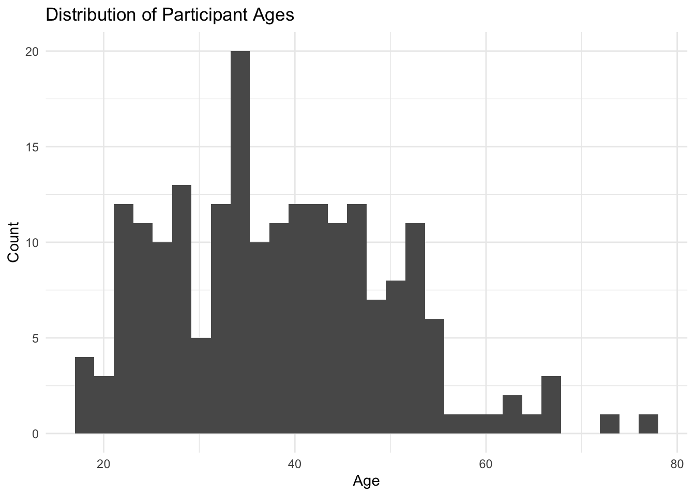
I prefer not to answer Man Non-binary
3 94 1
Woman
103
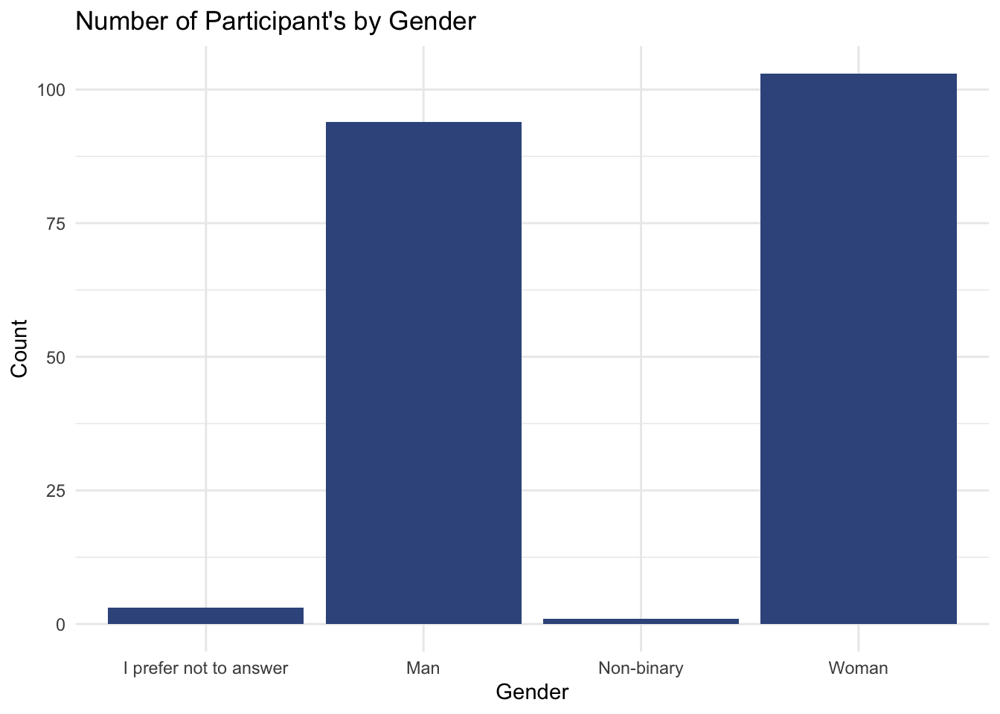
Min. 1st Qu. Median Mean 3rd Qu. Max.
12.39 19.22 22.75 25.86 29.88 69.93
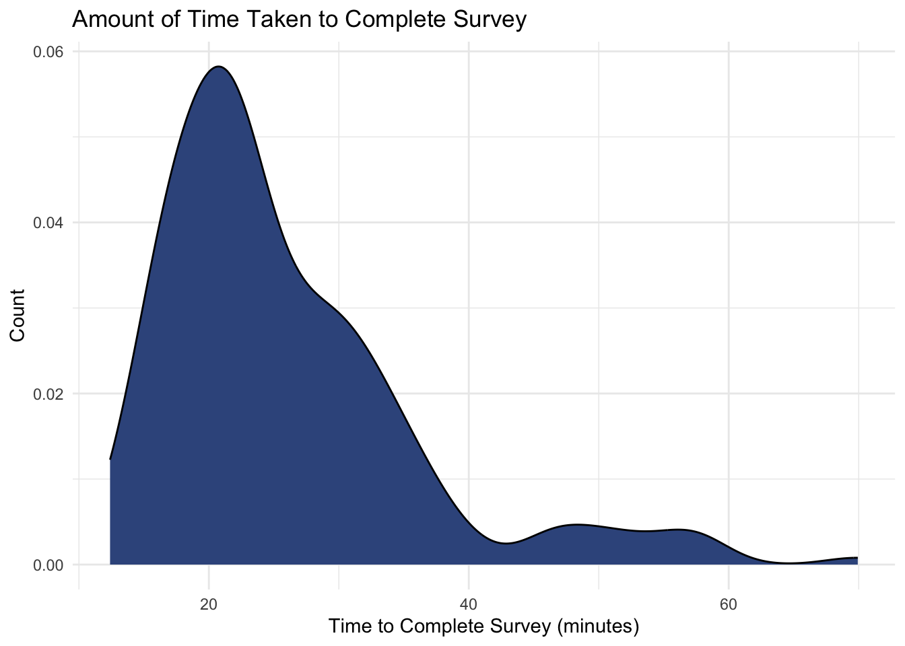
1 2 3 4
52 43 57 49
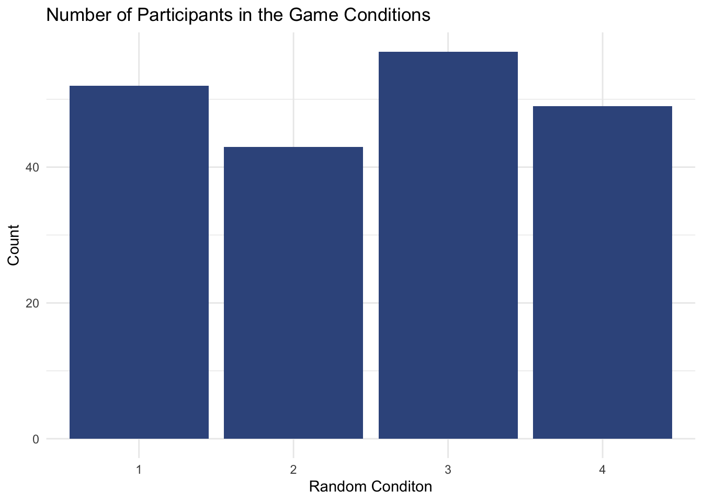
1 2 3 4 5
154 31 7 3 6
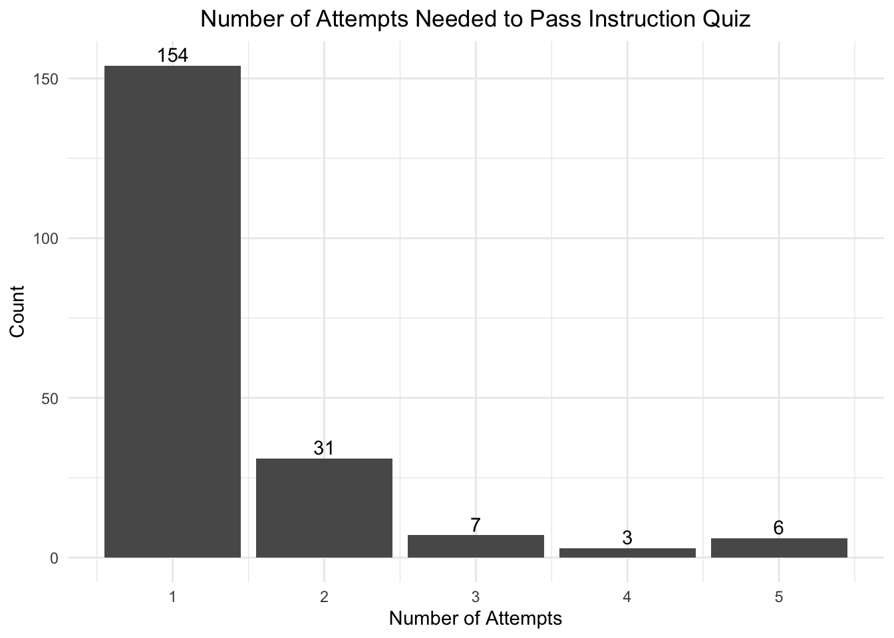
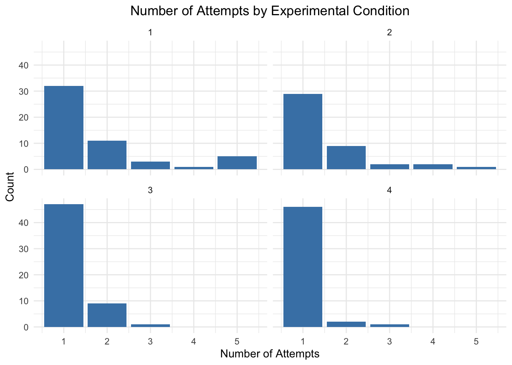
Exclusion Criteria
print(paste("Number of participants before any exclusions:",n_distinct(df$subject_id)))
[1] "Number of participants before any exclusions: 201"
if (n_excluded_attention !=0) { df <- df_exclusion} else {message("No one excluded. df is good!")}
No one excluded. df is good!
Main Analyses
Data Visualization
What might we want to visualize?
correlation matrix
library(reshape2)
Attaching package: 'reshape2'
The following object is masked from 'package:tidyr':
smiths
library(ggplot2)dv_emotion <-grep("state_", names(df), ignore.case =TRUE, value =TRUE)emotion_df <- df[, dv_emotion]emotion_df <- emotion_df[,!(names(emotion_df) %in%"dv2_state_emotion_DO")]cor_mat <-cor( emotion_df,use ="pairwise.complete.obs",method ="pearson")# melt the correlation matrixcor_long <-melt(cor_mat)ggplot(cor_long, aes(Var1, Var2, fill = value)) +geom_tile() +geom_text(aes(label =round(value, 2)), color ="black", size =3) +# show correlationsscale_fill_gradient2(low ="blue", mid ="white", high ="red",midpoint =0, limits =c(-1,1) ) +theme_minimal() +theme(axis.text.x =element_text(angle =45, hjust =1),axis.text.y =element_text(size =8),axis.title =element_blank() ) +labs(fill ="Correlation")
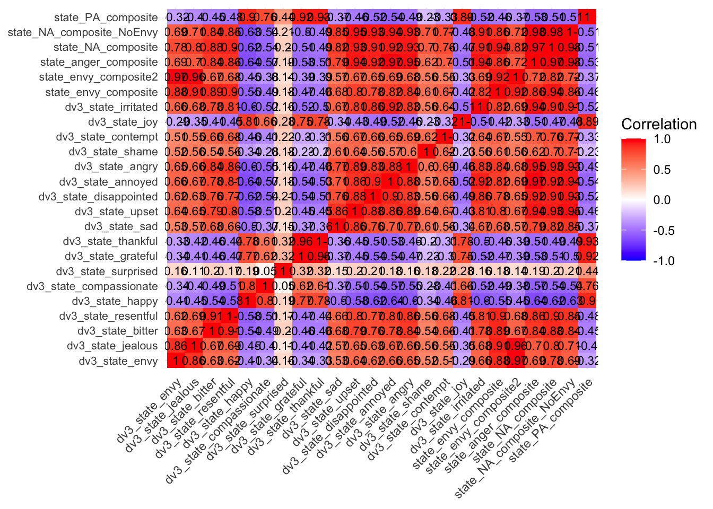
# ggplot(df, aes(x = state_envy_composite, y = state_anger_composite)) +# geom_point(alpha = 0.6) +# geom_smooth(method = "lm", se = TRUE) +# facet_wrap(~ exp_condition) +# labs(# title = "Relationship Between State Envy and State Anger by Condition",# x = "State Envy Composite (0–6)",# y = "State Anger Composite (0–6)"# ) +# theme_minimal() +# theme(plot.title = element_text(hjust = 0.5))ggplot(df, aes(x = state_envy_composite,y = state_anger_composite,color =factor(exp_condition))) +geom_point(alpha =0.6) +geom_smooth(method ="lm", se =FALSE) +labs(title ="Relationship Between State Envy and State Anger Across Conditions",x ="State Envy Composite (0–6)",y ="State Anger Composite (0–6)",color ="Condition" ) +theme_minimal() +theme(plot.title =element_text(hjust =0.5))
`geom_smooth()` using formula = 'y ~ x'
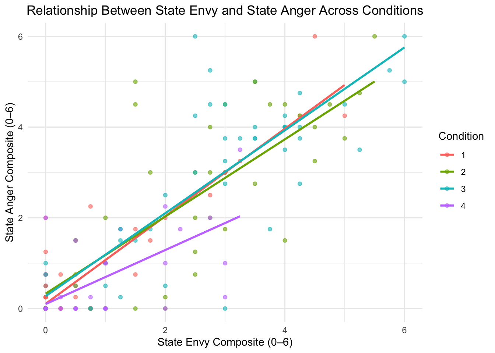
ggplot(df, aes(x = state_envy_composite,y = state_anger_composite,size = burn_amount, color =factor(exp_condition))) +geom_point(alpha =0.4) +labs(title ="Relationship Between State Envy and State Anger Across Conditions",x ="State Envy Composite (0–6)",y ="State Anger Composite (0–6)",size ="Money Sacraficed (¢)", color ="Condition" ) +scale_color_discrete(labels =c("Equtiable Treasurer", "Inequitable Treasurer, No Sharing Allowed", "Inequitable Treasurer, SP1 Can but Does Not Share","Inequitable Treasurer, SP1 Can and Does Share" )) +theme_minimal() +theme(plot.title =element_text(hjust =0.2))
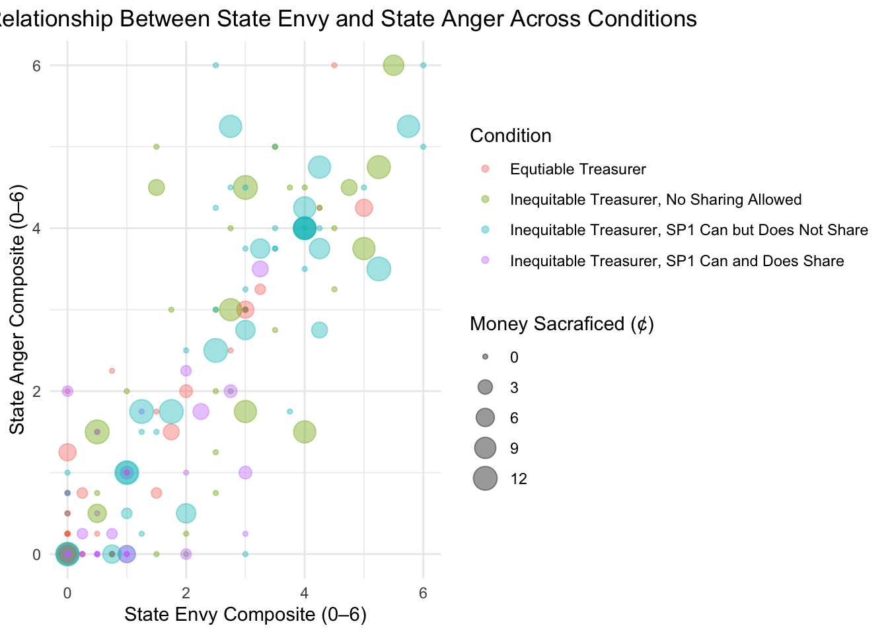
bar plot or box plot for the conditions on envy, anger, and
# visualize state envy # envy as a totalggplot(data = df, aes(x= state_envy_composite))+geom_density(fill ="steelblue") +labs(title ="Envy",x ="Envy", y ="Count")+theme_minimal()
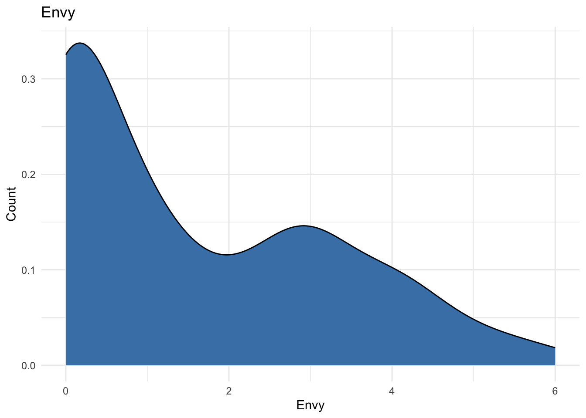
# state envy by conditionggplot(data = df, aes(x =factor(exp_condition), y = state_envy_composite, fill =factor(exp_condition)))+geom_boxplot() +stat_summary(fun.data =function(x) {data.frame(y =max(x, na.rm =TRUE) +0.2,label =paste0("n = ", sum(!is.na(x))) ) },geom ="text",size =4 ) +labs(title ="State Envy Across Conditions",x ="Conditions",y ="Level of State Envy (0-6)", fill ="Condition" )+scale_fill_discrete(labels =c("Equtiable Treasurer", "Inequitable Treasurer, No Sharing Allowed", "Inequitable Treasurer, SP1 Can but Does Not Share","Inequitable Treasurer, SP1 Can and Does Share" )) +theme_minimal() +theme(plot.title =element_text(hjust = .5))
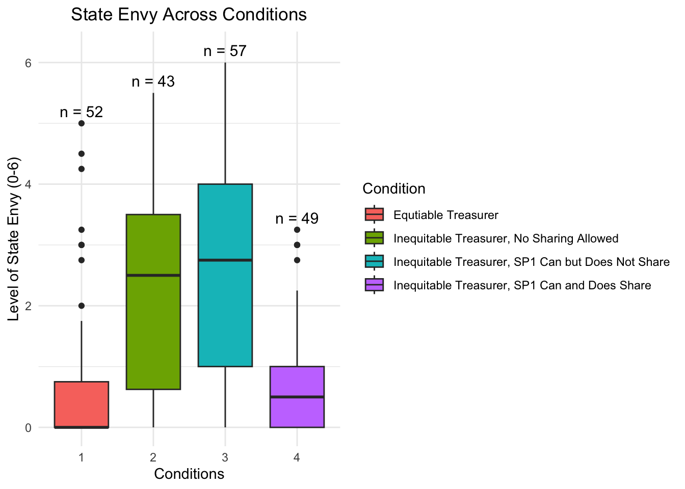
# state anger by conditionggplot(data = df, aes(x =factor(exp_condition), y = state_anger_composite, fill =factor(exp_condition)))+geom_boxplot() +stat_summary(fun.data =function(x) {data.frame(y =max(x, na.rm =TRUE) +0.2,label =paste0("n = ", sum(!is.na(x))) ) },geom ="text",size =4 ) +labs(title ="State Anger Across Conditions",x ="Conditions",y ="Level of State Anger (0-6)", fill ="Condition" )+scale_fill_discrete(labels =c("Equtiable Treasurer", "Inequitable Treasurer, No Sharing Allowed", "Inequitable Treasurer, SP1 Can but Does Not Share","Inequitable Treasurer, SP1 Can and Does Share" )) +theme_minimal() +theme(plot.title =element_text(hjust = .5))
#money burning by conditionggplot(data = df, aes(x = burn_amount, fill =factor(exp_condition))) +geom_bar() +scale_y_continuous(breaks =seq(0,145,10) ) +scale_x_continuous(breaks =seq(0, 12, 1),limits =c(-1, 12.5) ) +labs(title ="Amount Sacrified Across Conditions",x ="Sacrafice Amount (¢)",y ="Count", fill ="Condition" ) +scale_fill_discrete(labels =c("Equtiable Treasurer", "Inequitable Treasurer, No Sharing Allowed", "Inequitable Treasurer, SP1 Can but Does Not Share","Inequitable Treasurer, SP1 Can and Does Share" ))+theme_minimal() +theme(plot.title =element_text(hjust =0.5))
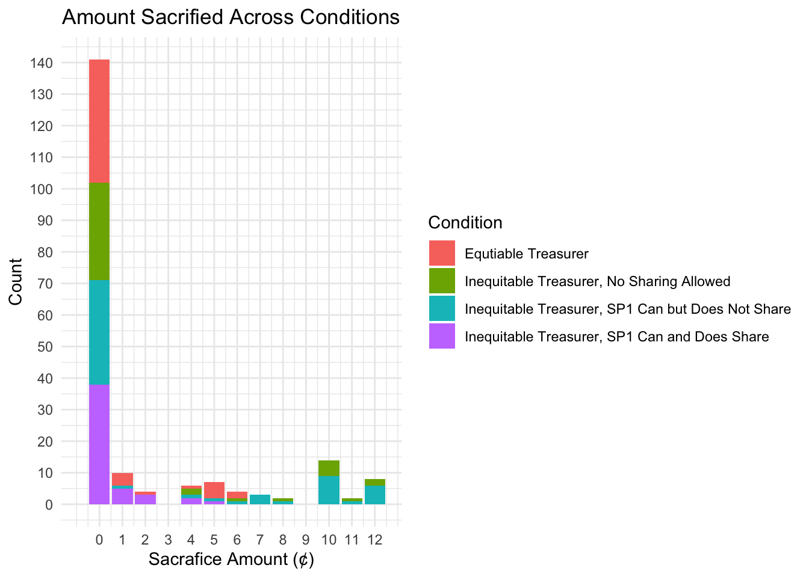
ggplot(data = df, aes(x =factor(exp_condition), y = burn_amount, fill =factor(exp_condition))) +geom_violin() +labs(title ="Amount Sacrified Across Conditions",x ="Condition",y ="Sacrifice Amount (¢)",fill ="Condition" ) +scale_fill_discrete(labels =c("Equtiable Treasurer", "Inequitable Treasurer, No Sharing Allowed", "Inequitable Treasurer, SP1 Can but Does Not Share","Inequitable Treasurer, SP1 Can and Does Share" ))+theme_minimal() +theme(plot.title =element_text(hjust = .5))
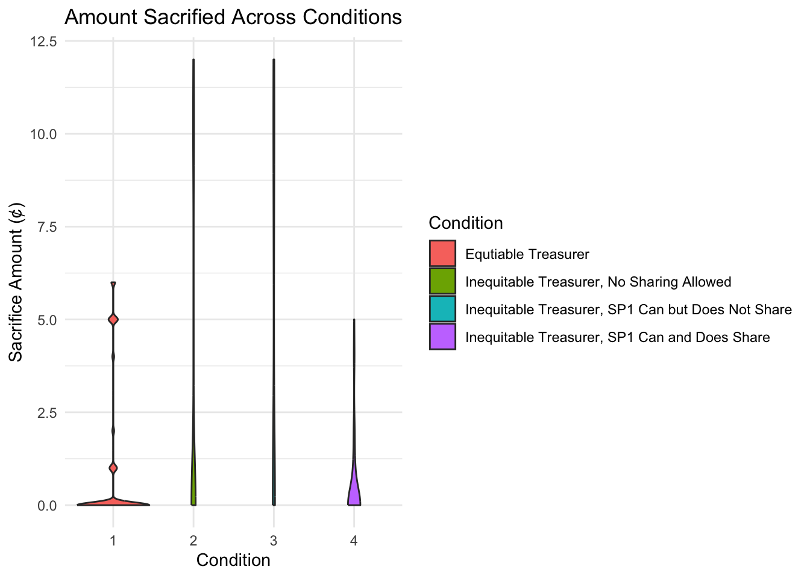
ggplot(data = df, aes(x =factor(exp_condition), y = burn_amount, fill =factor(exp_condition))) +geom_boxplot() +labs(title ="Amount Sacrified Across Conditions",x ="Condition",y ="Sacrifice Amount (¢)",fill ="Condition" ) +scale_fill_discrete(labels =c("Equtiable Treasurer", "Inequitable Treasurer, No Sharing Allowed", "Inequitable Treasurer, SP1 Can but Does Not Share","Inequitable Treasurer, SP1 Can and Does Share" ))+theme_minimal() +theme(plot.title =element_text(hjust = .5))
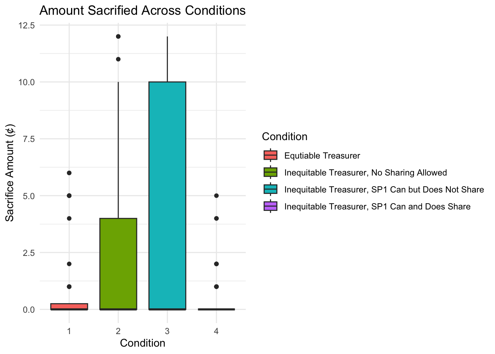
#money burning by envy ggplot(data = df, aes(y = burn_amount, x = state_envy_composite)) +geom_point() +geom_smooth(method ="lm") +labs(title ="The Relationship Between Envy and Money Burning",y ="Sacrafice Amount (¢)",x ="State Envy Composite (0-6)", ) +theme_minimal() +theme(plot.title =element_text(hjust =0.5))
`geom_smooth()` using formula = 'y ~ x'
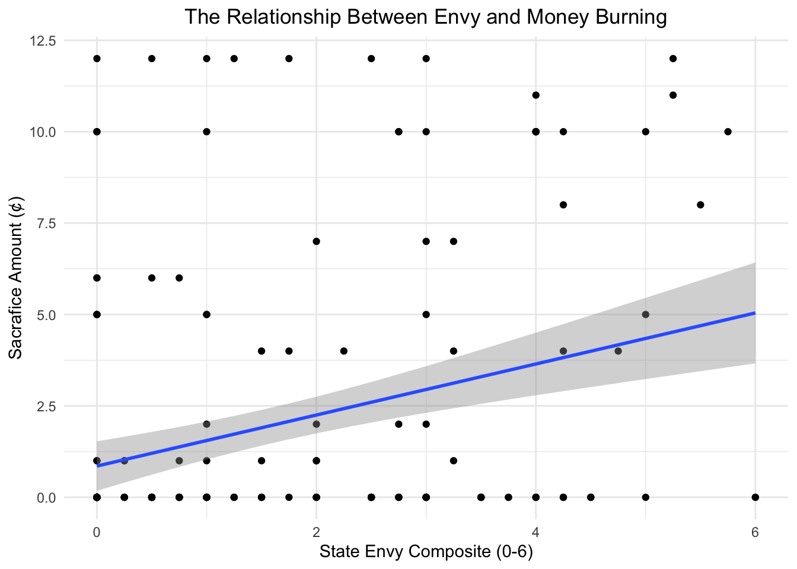
#money burning by anger ggplot(data = df, aes(y = burn_amount, x = state_anger_composite)) +geom_point() +geom_smooth(method ="lm") +labs(title ="The Relationship Between Anger and Money Burning",y ="Sacrafice Amount (¢)",x ="State Anger Composite (0-6)", ) +theme_minimal() +theme(plot.title =element_text(hjust =0.5))
`geom_smooth()` using formula = 'y ~ x'
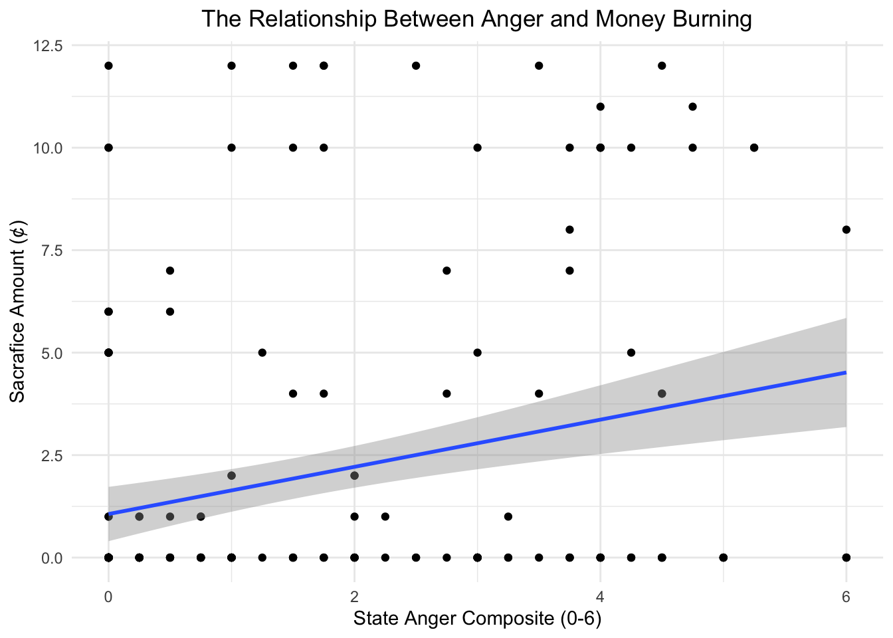
# money burning by envy and anger on same plot # Create a long-format dataframe for overlaydf_long <- df %>%pivot_longer(cols =c(state_envy_composite, state_anger_composite),names_to ="emotion",values_to ="score" )ggplot(df_long, aes(x = score, y = burn_amount, color = emotion)) +geom_point(alpha =0.5) +geom_smooth(method ="lm", se =TRUE) +scale_color_manual(values =c("state_envy_composite"="#1b9e77", "state_anger_composite"="darkred" ),labels =c("state_envy_composite"="Envy", "state_anger_composite"="Anger" ) )+labs(title ="Comparing Slopes of Envy vs Anger on Money Burning",x ="State Emotion Composite Score (0-6)",y ="Sacrifice Amount (¢)",color ="Emotion Composite" ) +theme_minimal() +theme(plot.title =element_text(hjust =0.5))
`geom_smooth()` using formula = 'y ~ x'
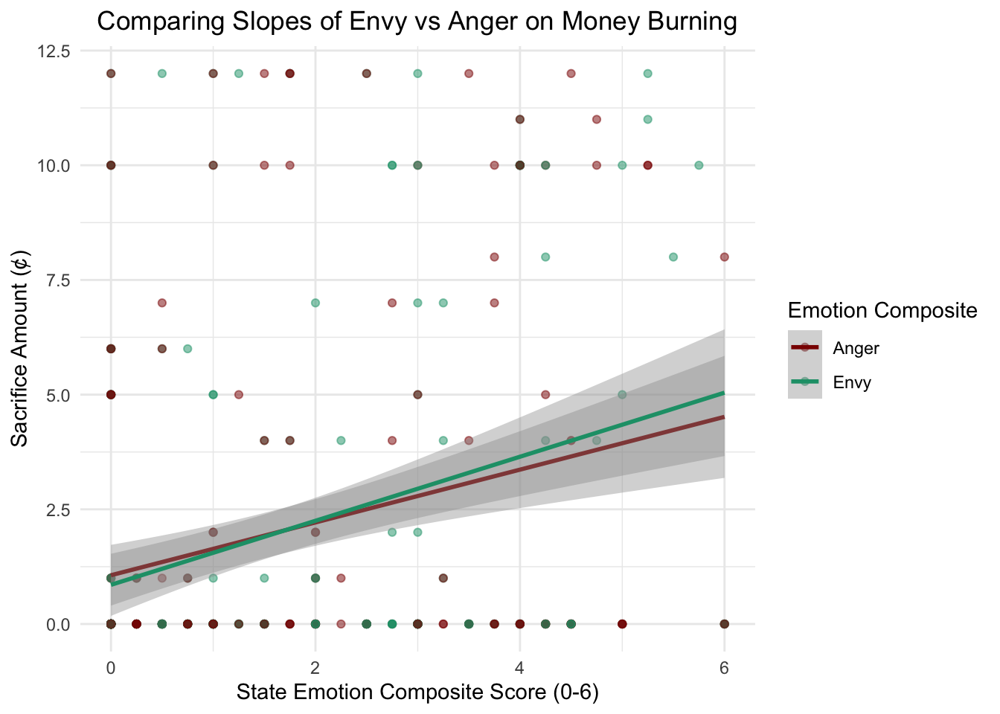
# anger and envy emotion ratings on the same plot (boxplot)ggplot(df_long, aes(y = score, x = emotion, fill =factor(exp_condition))) +geom_boxplot(position =position_dodge(width =0.8)) +scale_x_discrete(labels =c("state_envy_composite"="Envy", "state_anger_composite"="Anger" )) +labs(title ="State Envy Versus State Anger Across Conditions",x ="Emotion Composite",y ="Self-Report Ratings (0-6)",fill ="Condition" ) +theme_minimal() +theme(plot.title =element_text(hjust =0.5))
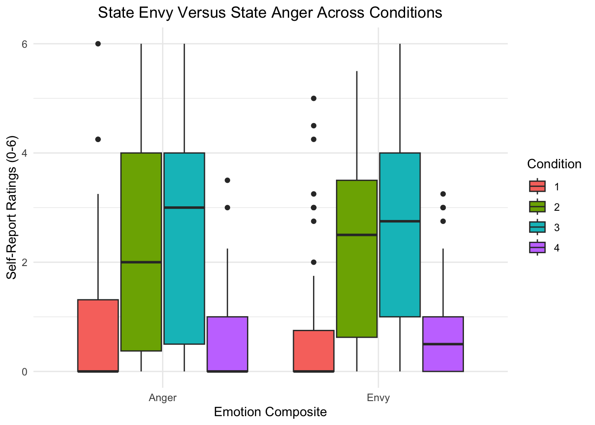
# anger and envy emotion ratings on the same plot (violin)ggplot(df_long, aes(y = score, x = emotion, fill =factor(exp_condition))) +geom_violin() +scale_x_discrete(labels =c("state_envy_composite"="Envy", "state_anger_composite"="Anger" )) +labs(title ="State Envy Versus State Anger Across Conditions",x ="Emotion Composite",y ="Self-Report Ratings (0-6)",fill ="Condition" ) +theme_minimal() +theme(plot.title =element_text(hjust =0.5))
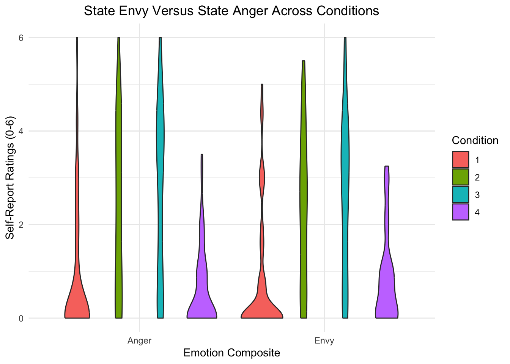
# anger and envy emotion ratings on the same plot (bar)ggplot(df_long, aes(x = emotion, y = score, fill =factor(exp_condition))) +stat_summary(fun = mean,geom ="col",position =position_dodge(width =0.8) ) +stat_summary(fun.data = mean_se,geom ="errorbar",width =0.2,position =position_dodge(width =0.8) ) +scale_x_discrete(labels =c("state_envy_composite"="Envy", "state_anger_composite"="Anger" ) ) +labs(title ="State Envy Versus State Anger Across Conditions",x ="Emotion Composite",y ="Mean Self-Report Rating (0–6)",fill ="Condition" ) +scale_fill_discrete(labels =c("Equtiable Treasurer", "Inequitable Treasurer, No Sharing Allowed", "Inequitable Treasurer, SP1 Can but Does Not Share","Inequitable Treasurer, SP1 Can and Does Share" )) +theme_minimal() +theme(plot.title =element_text(hjust =0.5))
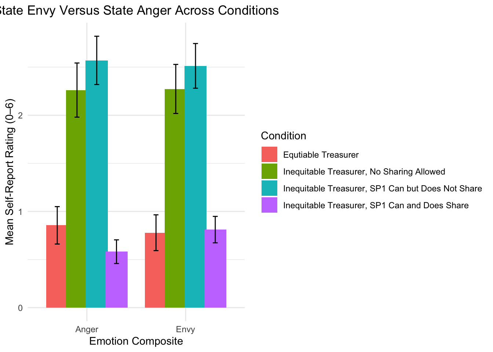
Best way to demo some of the OE data we captured?
Statistical Analyses
What if we use effects coding instead of helmert contrasts? And then we can test each condition to the grand mean?
library(dplyr)library(emmeans)
Welcome to emmeans.
Caution: You lose important information if you filter this package's results.
See '? untidy'
Warning in fa.stats(r = r, f = f, phi = phi, n.obs = n.obs, np.obs = np.obs, :
The estimated weights for the factor scores are probably incorrect. Try a
different factor score estimation method.
Warning in fa.stats(r = r, f = f, phi = phi, n.obs = n.obs, np.obs = np.obs, :
An ultra-Heywood case was detected. Examine the results carefully
Warning in cov2cor(t(w) %*% r %*% w): diag(V) had non-positive or NA entries;
the non-finite result may be dubious
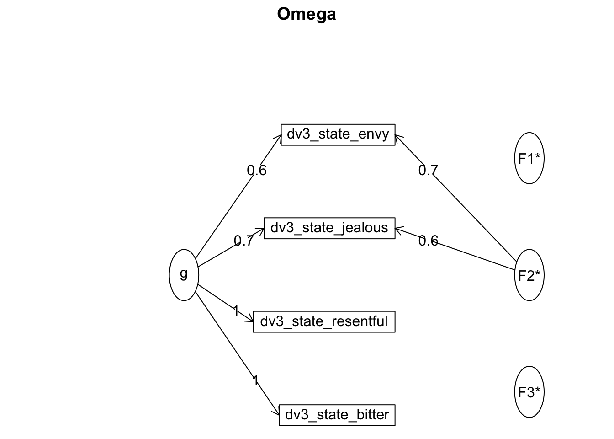
Omega
Call: omegah(m = m, nfactors = nfactors, fm = fm, key = key, flip = flip,
digits = digits, title = title, sl = sl, labels = labels,
plot = plot, n.obs = n.obs, rotate = rotate, Phi = Phi, option = option,
covar = covar)
Alpha: 0.92
G.6: 0.94
Omega Hierarchical: 0.83
Omega H asymptotic: 0.86
Omega Total 0.97
Schmid Leiman Factor loadings greater than 0.2
g F1* F2* F3* h2 h2 u2 p2 com
dv3_state_envy 0.65 0.66 0.86 0.86 0.14 0.49 2.03
dv3_state_jealous 0.70 0.64 0.90 0.90 0.10 0.54 2.02
dv3_state_bitter 0.96 0.92 0.92 0.08 1.00 1.01
dv3_state_resentful 0.96 0.93 0.93 0.07 0.99 1.02
With Sums of squares of:
g F1* F2* F3* h2
2.74 0.00 0.84 0.03 3.25
general/max 0.84 max/min = Inf
mean percent general = 0.76 with sd = 0.28 and cv of 0.37
Explained Common Variance of the general factor = 0.76
The degrees of freedom are -3 and the fit is 0
The number of observations was 201 with Chi Square = 0 with prob < NA
The root mean square of the residuals is 0
The df corrected root mean square of the residuals is NA
Compare this with the adequacy of just a general factor and no group factors
The degrees of freedom for just the general factor are 2 and the fit is 0.83
The number of observations was 201 with Chi Square = 162.9 with prob < 4.2e-36
The root mean square of the residuals is 0.17
The df corrected root mean square of the residuals is 0.29
RMSEA index = 0.633 and the 90 % confidence intervals are 0.554 0.719
BIC = 152.3
Measures of factor score adequacy
g F1* F2* F3*
Correlation of scores with factors 0.98 0 0.93 0.48
Multiple R square of scores with factors 0.96 0 0.86 0.23
Minimum correlation of factor score estimates 0.92 -1 0.71 -0.54
Total, General and Subset omega for each subset
g F1* F2* F3*
Omega total for total scores and subscales 0.97 NA 0.93 0.96
Omega general for total scores and subscales 0.83 NA 0.48 0.96
Omega group for total scores and subscales 0.13 NA 0.45 0.00
omega(df[,state_anger_items])
Warning in GPFoblq(A, Tmat = Tmat, normalize = normalize, eps = eps, maxit =
maxit, : convergence not obtained in GPFoblq. 1000 iterations used.
Warning in fa.stats(r = r, f = f, phi = phi, n.obs = n.obs, np.obs = np.obs, :
The estimated weights for the factor scores are probably incorrect. Try a
different factor score estimation method.
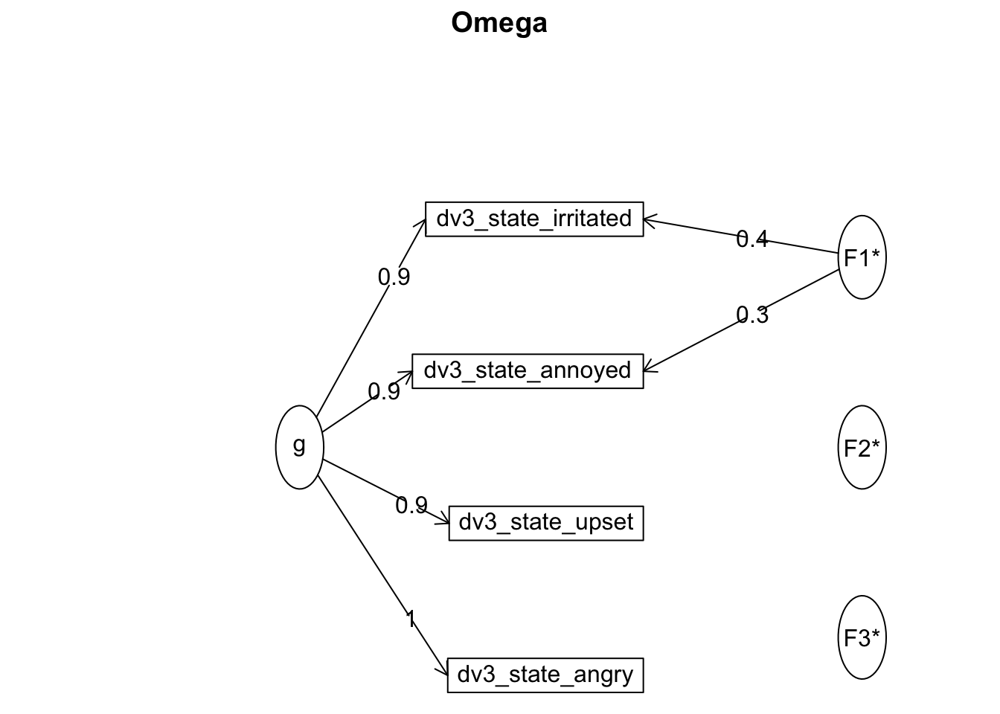
Omega
Call: omegah(m = m, nfactors = nfactors, fm = fm, key = key, flip = flip,
digits = digits, title = title, sl = sl, labels = labels,
plot = plot, n.obs = n.obs, rotate = rotate, Phi = Phi, option = option,
covar = covar)
Alpha: 0.96
G.6: 0.96
Omega Hierarchical: 0.94
Omega H asymptotic: 0.96
Omega Total 0.97
Schmid Leiman Factor loadings greater than 0.2
g F1* F2* F3* h2 h2 u2 p2 com
dv3_state_angry 0.95 0.90 0.90 0.10 1.00 1.00
dv3_state_upset 0.93 0.87 0.87 0.13 1.00 1.00
dv3_state_irritated 0.87 0.36 0.89 0.89 0.11 0.85 1.34
dv3_state_annoyed 0.92 0.32 0.95 0.95 0.05 0.89 1.24
With Sums of squares of:
g F1* F2* F3* h2
3.38 0.24 0.00 0.00 3.27
general/max 1.03 max/min = 56071.21
mean percent general = 0.94 with sd = 0.08 and cv of 0.08
Explained Common Variance of the general factor = 0.93
The degrees of freedom are -3 and the fit is 0
The number of observations was 201 with Chi Square = 0 with prob < NA
The root mean square of the residuals is 0
The df corrected root mean square of the residuals is NA
Compare this with the adequacy of just a general factor and no group factors
The degrees of freedom for just the general factor are 2 and the fit is 0.37
The number of observations was 201 with Chi Square = 72.04 with prob < 2.3e-16
The root mean square of the residuals is 0.05
The df corrected root mean square of the residuals is 0.08
RMSEA index = 0.417 and the 90 % confidence intervals are 0.339 0.504
BIC = 61.43
Measures of factor score adequacy
g F1* F2* F3*
Correlation of scores with factors 0.98 0.76 0.06 0.03
Multiple R square of scores with factors 0.95 0.58 0.00 0.00
Minimum correlation of factor score estimates 0.91 0.16 -0.99 -1.00
Total, General and Subset omega for each subset
g F1* F2* F3*
Omega total for total scores and subscales 0.97 0.96 0.94 NA
Omega general for total scores and subscales 0.94 0.84 0.94 NA
Omega group for total scores and subscales 0.03 0.12 0.00 NA